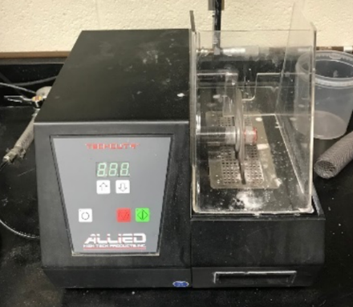
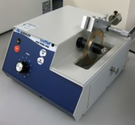
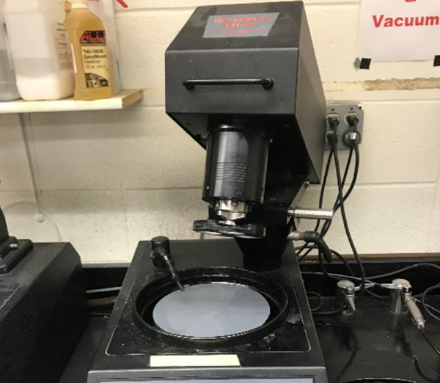
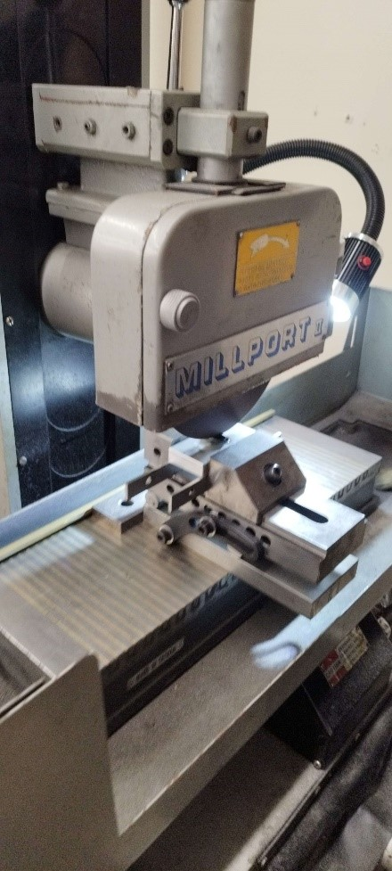
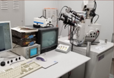
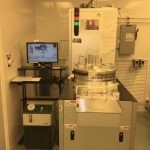
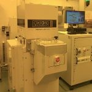
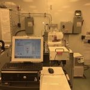

Lab Facilities

Allied High Tech Low Speed Saw

Buehler Isomet Low Speed Saw

Allied High Tech M-Prep 3 Grinding/Polishing

MillPort II

Focused Ion Beam FEI
Lab Equipment

Plasma-therm Advanced Vacuum Apex

Oxford Plasma Pro 100

Plasma-therm Unaxis Shuttleline ICP Etcher
Millport II
Focused Ion Beam
×